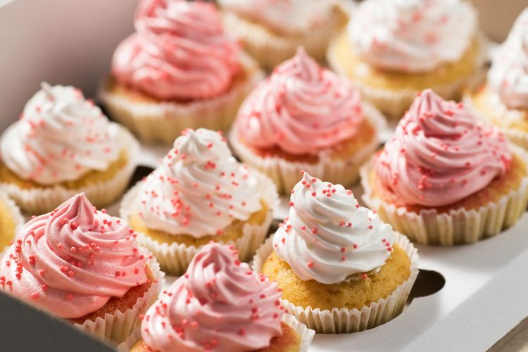

A cupcake is a tiny cake that is baked in a thin paper mold or an aluminum cup. One cupcake should typically serve one person. The first mention of a cupcake can be traced back to a 1796 cookbook called American Cookery, written by Amelia Simmons. Their popularity is probably owed to the fact that they bake much quicker than larger cakes.
Meal prep time : 35 minutes
Servings : 12